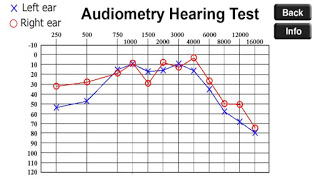
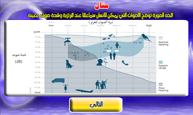

Audiometry Hearing Test
Audiometry is the measurement of pure frequencies and is a behavioral test used to measure hearing sensitivity In the human being
Our application in this test is based on a hearing test called Pure Tone Measurement (PTA) which is an abbreviation of Pure Tone Audiometry
After completing the scan in the app you will get a hearing diagram on both ears as in this picture.
Hearing Test Online
Through this color image, it is possible to identify the areas of weakness for certain frequencies and a specific display, as shown on the right of the image, and it is divided as follows.
| Natural hearing. | Where frequencies can be heard up to 20 dB. |
| Minor hearing impairment. | Which ranges from 20 to 40 decibels. |
| Moderate hearing impairment. | It is between 40 and 70 decibels. |
| Severe hearing impairment. | From 70 decibels to 90 degrees. |
| Very severe hearing impairment. | It ranges from 90 decibels or more. |
Hearing mechanism in humans
Sound waves enter the ear after the pinna collects them. The sound waves then pass through the external auditory canal to the so-called eardrum that converts them into vibrations that are transmitted to the hammer, anvil, and passengers, and then to the cochlea, which transmits the vibrations to the auditory nerve, which in turn transmits.The vibrations are transmitted to the brain in the form of nerve impulses, where they are translated into the sounds of the brain
The Sound
In this application there are two units of sound measurement. The first is for high and low sound and its scale is called dB dB. The second is to measure the tone or frequency of a sound within one second and is called Hz. Human hearing is limited to 20 Hz to 20,000 Hz
The human ear can hear certain frequencies and a certain height as in the following image.
As the normal conversation 65 dB
How to conduct an examination
- Headphones should be worn for examination.
- The examination should be carried out in a completely quiet room.
- The scan will start with the left ear where successive pages will appear, through which you must define what is called the threshold of hearing, which is the lowest degree that your ear can hear for all the vibrations that will appear in sequence.
- After completing the left ear, check the right ear in the same way.
- Then a final outline of your hearing condition will appear.
Questions and Answers
How to take the test?
All you have to do is use any Android device or iPhone or perform an online scan on the screen below the topic using small earphones and put the sound at a normal degree while listening to the scan tone and then follow the steps
Is memorizing the final diagram necessary?
Yes, you can save it to compare it with future tests and follow up on the difference between the two plans, provided that the examination is done with the same device, headphones and conditions.
Will the end result of a hearing test be the same for a PTA hearing specialist?.
Very possible, but definitely the result should be somewhat close to professional scan depending on the type of cellphone, earphones and case during the scan.
Why do I hear the sound of some of the frequencies in region number zero?
This is because zero decibels does not mean a lack of sound, but rather that the sound became very weak.
The application is free and available in two languages, Arabic and English, and is available for Android and iPhone devices and links below.